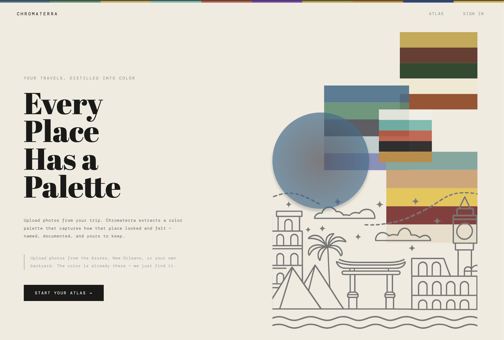

PROD: CHROMATERRATAKE: 03
Chromaterra — Global Color Atlas
Upload travel photos to extract culturally anchored color palettes, paired with fonts and saved by region.
React · Claude AI API · Firebase · CSS · Responsive Design